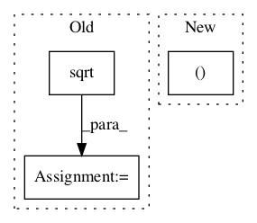

8cdbb1637b140c01f431831e7b2c2a63afc96209,kapre/time_frequency.py,Spectrogram,call,#Spectrogram#Any#,139

Before Change
axis=self.ch_axis_idx,
)
if self.power_spectrogram != 2.0:
output = K.pow(K.sqrt(output), self.power_spectrogram)
if self.return_decibel_spectrogram:
output = backend_keras.amplitude_to_decibel(output)
return output
def get_config(self):
config = {
After Change
// this is needed because tf.signal.stft lives in channels_first land.
if self.input_data_format == "channels_last":
signals = tf.transpose(signals, perm=(0, 2, 1)) // (batch, ch, time)
stfts = tf.signal.stft(
signals=signals,
In pattern: SUPERPATTERN
Frequency: 4
Non-data size: 3
Instances
Project Name: keunwoochoi/kapre
Commit Name: 8cdbb1637b140c01f431831e7b2c2a63afc96209
Time:
Author: null
File Name: kapre/time_frequency.py
Class Name: Spectrogram
Method Name: call
Project Name: deepchem/deepchem
Commit Name: de7f5863338af5e1f92257cb29a6ca9a1c52c473
Time:
Author: null
File Name: deepchem/metalearning/tests/test_maml.py
Class Name: TestMAML
Method Name: test_sine
Project Name: khaotik/DaNet-Tensorflow
Commit Name: f31d73eab214f5d8f8bc993807db9f73faed8e42
Time:
Author: null
File Name: app/modules.py
Class Name: BiLstmEncoder
Method Name: __call__
Project Name: dpressel/mead-baseline
Commit Name: 78a7f7de24c34235d0784a5781f46de34d2336eb
Time:
Author: null
File Name: python/eight_mile/pytorch/layers.py
Class Name: LayerNorm
Method Name: forward